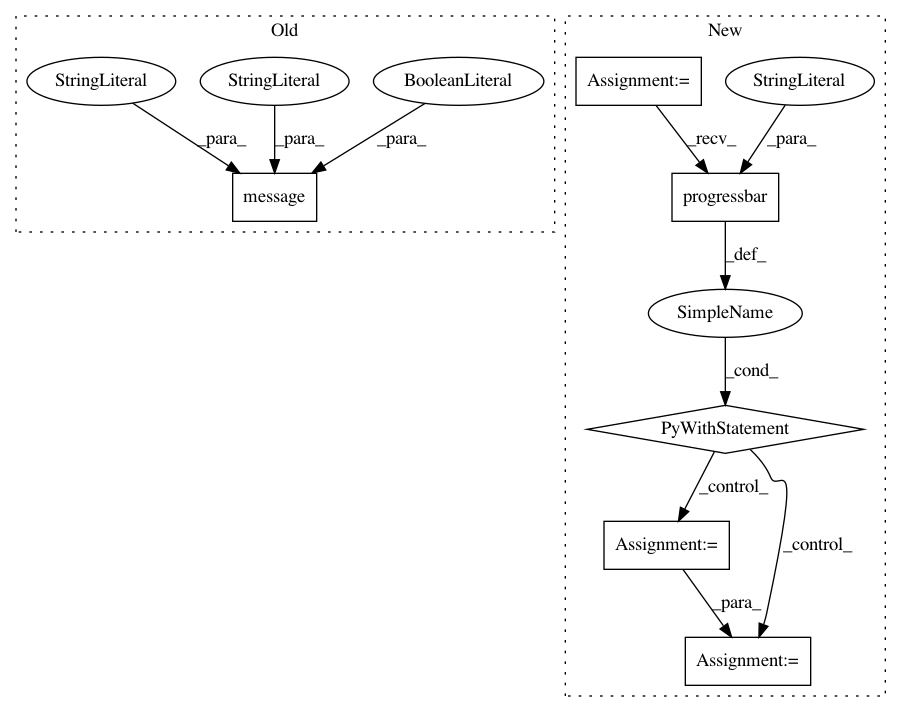

78f505a6cd78c0072ea1a77afb229f8d6658d17b,kraken/ketos.py,,transcription,#Any#Any#Any#Any#Any#Any#Any#Any#Any#Any#Any#,318
Before Change
logger.info("{}".format(pred.prediction))
spin("Recognizing")
preds.append(pred)
message("\b\u2713", fg="green", nl=False)
message("\033[?25h\n", nl=False)
ti.add_page(im, res, records=preds)
else:
ti.add_page(im, res)
After Change
prefill = models.load_any(prefill)
message("\u2713", fg="green")
with log.progressbar(images, label="Reading images") as bar:
for fp in bar:
logger.info("Reading {}".format(fp.name))
im = Image.open(fp)
im_bin = im
if not is_bitonal(im):
logger.info("Binarizing page")
im_bin = binarization.nlbin(im)
logger.info("Segmenting page")
if bw:
im = im_bin
res = pageseg.segment(im_bin, text_direction, scale, maxcolseps, black_colseps)
if prefill:
it = rpred.rpred(prefill, im_bin, res)
preds = []
logger.info("Recognizing")
for pred in it:
logger.debug("{}".format(pred.prediction))
preds.append(pred)
ti.add_page(im, res, records=preds)
else:
ti.add_page(im, res)
fp.close()
logger.info("Writing transcription to {}".format(output.name))
message("Writing output", nl=False)
ti.write(output)
message("\u2713", fg="green")
In pattern: SUPERPATTERN
Frequency: 3
Non-data size: 6
Instances
Project Name: mittagessen/kraken
Commit Name: 78f505a6cd78c0072ea1a77afb229f8d6658d17b
Time: 2018-05-23
Author: mittagessen@l.unchti.me
File Name: kraken/ketos.py
Class Name:
Method Name: transcription
Project Name: mittagessen/kraken
Commit Name: 78f505a6cd78c0072ea1a77afb229f8d6658d17b
Time: 2018-05-23
Author: mittagessen@l.unchti.me
File Name: kraken/kraken.py
Class Name:
Method Name: recognizer
Project Name: mittagessen/kraken
Commit Name: 78f505a6cd78c0072ea1a77afb229f8d6658d17b
Time: 2018-05-23
Author: mittagessen@l.unchti.me
File Name: kraken/ketos.py
Class Name:
Method Name: extract